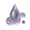
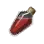

+
 White Cedar Sap
🔗
+
How to Get
+
Gathering
🔗
White Cedar Trees
+
Nodes
🔗
Elric Shrine - Lumbering
Cheapest Route To: Tarif (10CP)
(1CP) Soldier's Grave
(1CP) Castle Ruins
(2CP) Kamasylve Temple
(1CP) Ancient Ruins Excavation Site
(1CP) Canyon of Corruption
(1CP) Elric Shrine
(3CP) Elric Shrine - Lumbering
Cheapest Route To: Heidel (11CP)
(3CP) Eastern Boarder
(2CP) Kamasylve Temple
(1CP) Ancient Ruins Excavation Site
(1CP) Canyon of Corruption
(1CP) Elric Shrine
(3CP) Elric Shrine - Lumbering
Cheapest Route To: Velia (13CP)
(1CP) Forest of Plunder
(1CP) Ehwaz Hill
(1CP) Cron Castle Site
(3CP) Mediah Northern Gateway
(1CP) The Mausoleum
(2CP) Mediah Northern Highlands
(1CP) Elric Shrine
(3CP) Elric Shrine - Lumbering
Mediah Northern Highlands - Lumbering
Cheapest Route To: Heidel (12CP)
(3CP) Eastern Border
(1CP) Rumbling Land
(2CP) Ancient Fissure
(1CP) Helms Post
(2CP) Mediah Northern Highlands
(3CP) Mediah Northern Highlands - Lumbering
Cheapest Route To: Tarif (12CP)
(1CP) Soldier's Grave
(1CP) Castle Ruins
(2CP) Kamasylve Temple
(1CP) Ancient Ruins Excavation Site
(1CP) Canyon of Corruption
(1CP) Elric Shrine
(2CP) Mediah Northern Highlands
(3CP) Mediah Northern Highlands - Lumbering
Cheapest Route To: Velia (12CP)
(1CP) Forest of Plunder
(1CP) Ehwaz Hill
(1CP) Cron Castle Site
(3CP) Mediah Nothern Gateway
(1CP) The Mausoleum
(2CP) Mediah Northern Highlands
(3CP) Mediah Northern Highlands - Lumbering
+
Used In Recipe
+
Alchemy
🔗
Elixir of Deep Sea
5
Khalk's Elixir
10
+
Processing
🔗
+
Guild
🔗
[Guild] Iron Core Timber Square
4
+
Heating
Adhesive for Upgrade
100
 Sticky Blood
5
And More...
+
notes
-notes
 Elric Shrine - Lumbering
Mediah Northern Highlands - Lumbering
Elric Shrine - Lumbering
Mediah Northern Highlands - Lumbering